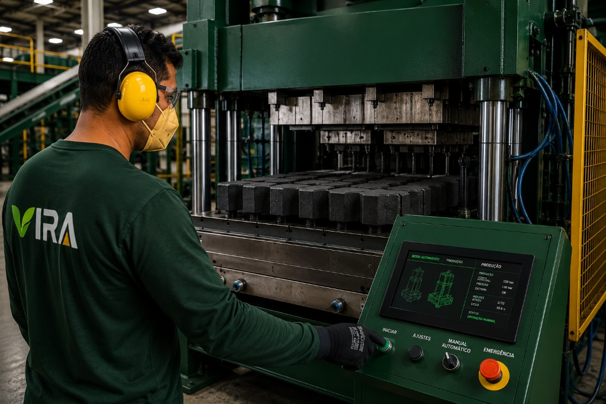
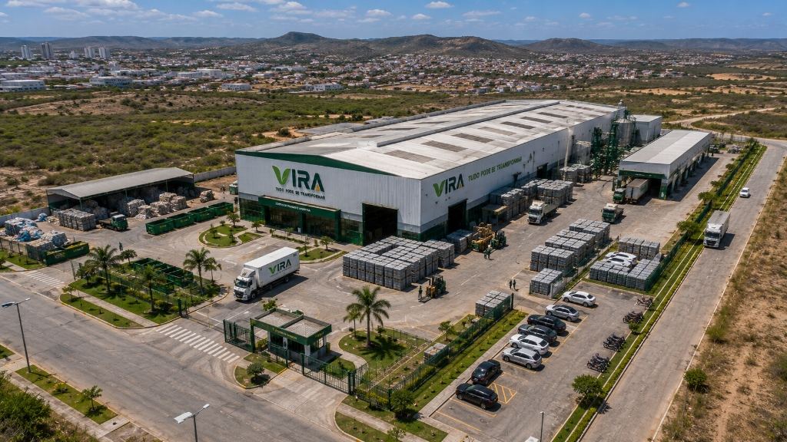
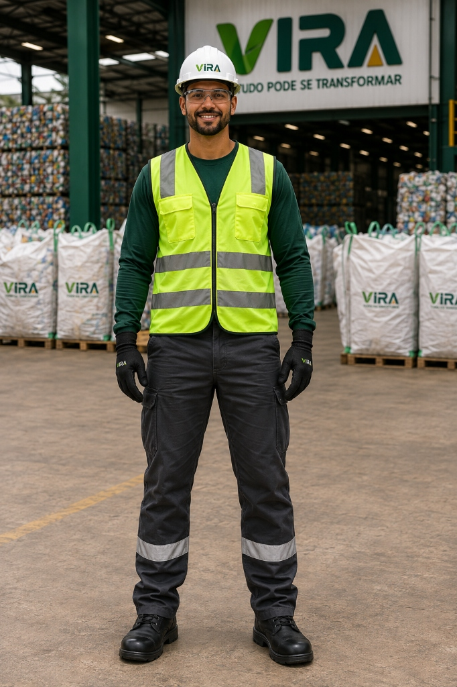

Paver Intertravado 16 Faces
VRA-PVR-2026Geometria autobloqueante holandesa para vias de tráfego pesado comercial e calçadões públicos com dissipação térmica superior ao asfalto.
≥ 35.0 MPa
•
200×100×60 mm


Engenharia circular de escala para infraestrutura urbana. Transformação industrial de polímeros pós-consumo em artefatos normatizados de alto desempenho.
Não reciclamos resíduos. Engenheiramos uma nova classe de compósitos poliméricos de alta densidade estrutural, imunes à corrosão e formulados para suportar décadas de esforço mecânico severo.

Flakes de polímeros nobres pós-consumo (PEAD / PP) após descontaminação termoquímica em circuito fechado e separação óptica de granulometria.
Lavagem termoquímica e separação densimétrica precisa que eliminam óleos, pigmentos instáveis e contaminantes microscópicos.
Termocompressão sob desvolatilização a vácuo, garantindo massa homogênea e ausência absoluta de microbolhas estruturais.
Homologado para tráfego pesado comercial e canalizado segundo ensaios destrutivos da norma ABNT NBR 9781:2013.
Matriz totalmente não porosa. Imune a ciclos de congelamento/degelo, maresia costeira, hidrocarbonetos e eflorescência.
Artefatos complementares de alta precisão milimétrica projetados para pavimentação, contenção, drenagem viária e arquitetura urbana de longa durabilidade.
Geometria autobloqueante holandesa para vias de tráfego pesado comercial e calçadões públicos com dissipação térmica superior ao asfalto.

Encaixe macho-fêmea de precisão milimétrica para alvenaria racionalizada, muros de contenção técnica e redução de 35% de peso estrutural.

Meio-fio viário termoprensado sob 300t de carga. Alta absorção a choques mecânicos de frotas pesadas e sarjeta integrada para drenagem pluvial eficiente.

Substituto direto de vigamentos de madeira de lei em áreas externas, decks de orla e pergolados. Imune a cupins, brocas e podridão biológica.

Placas de grande formato com cura UV-50+ para fachadas ventiladas, revestimentos acústicos e brises de alta resistência a intempéries.
Flakes e pellets de alta homogeneidade para processos de injeção contínua, extrusão pesada ou rotomoldagem industrial com laudo reológico de lote.
Projetos de alta exigência mecânica e ambiental onde os artefatos circulares VIRA comprovaram durabilidade extrema frente a maresia severa, intempéries e tráfego contínuo de cargas.
Intervenção contínua em calçadão e ciclovia sob condições severas de névoa salina e tráfego ininterrupto de ciclistas e veículos de patrulha.
Passeio público acessível com rampas integradas e fachada ventilada do centro comunitário resistente a intempéries solares.
Pavimentação industrial de alta tonelagem para estacionamento de carretas bitrem e empilhadeiras com derramamento eventual de combustíveis.
Operamos com tecnologia proprietária de termocompressão de alta tonelagem a vácuo, controle de qualidade de lote por telemetria e matriz energética 100% solar fotovoltaica.

Linha contínua de termocompressão a vácuo alimentada por matriz solar fotovoltaica dedicada e controle reológico digital.

Fechamento com atmosfera controlada a vácuo para fusão molecular perfeita do polímero sem queima térmica.
Aço temperado com canais internos de refrigeração e tolerância dimensional milimétrica conforme NBR 9781.

Controle digital de curvas de aquecimento, pressão, tempos de prensagem e registro de passaporte digital por lote.

Silos e moegas com controle de umidade relativa e dosagem volumétrica robotizada para blend homogêneo.

Tanques de flotação com separação precisa de polímeros pesados e purificação para pureza ≥ 99.4%.
Triagem qualificada em cooperativas homologadas com rastreabilidade digital por fardo.
Lavagem em circuito hídrico fechado e separação densimétrica para pureza ≥ 99.4%.
Aditivação mineral balanceada e estabilizantes contra degradação por raios UV-50+.
Compactação a 1.850 kg/m³ eliminando microbolhas e garantindo fck ≥ 35 MPa.
Testes destrutivos de absorção (< 0.05%), atrito (BPN 68) e emissão de laudo de lote.
Expedição paletizada com garantia decenal para calçadões, ciclovias e pátios pesados.
Estrategicamente situado no Agreste Pernambucano (8° 17' 00" S, 35° 58' 34" W), nosso complexo industrial articula a maior rede de cooperativas do Nordeste a obras de engenharia em todo o país.

Área fabril projetada para escalabilidade imediata, contando com pátio logístico próprio, silos de armazenamento climatizados e laboratório interno de ensaios físicos.

Parceria auditada com cooperativas de catadores do Agreste e Sertão pernambucano, assegurando remuneração justa acima do mercado, fornecimento de EPIs e certificação de origem.

Malha de distribuição capacitada para abastecer secretarias de obras públicas, concessionárias rodoviárias e incorporadoras privadas em qualquer região do Brasil com paletes cintados e rastreados.
Sem fotografias de banco nem poses encenadas. A precisão técnica da VIRA é garantida por engenheiros químicos, especialistas em normas ABNT e operadores fabris dedicados.

Líder de Formulação Reológica & Caracterização Polimérica

Gerente de Segurança Operacional & Controle ABNT

Operador Especialista de Matrizes Térmicas & IHM

Inspeção Dimensional & Controle Estatístico de Lote
“Cada paver que sai da prensa carrega uma garantia decenal e a responsabilidade de suportar o tráfego contínuo de uma cidade inteira. Não há espaço para concessões na engenharia.”
— Relatório Operacional da Unidade Industrial de Caruaru • Equipe de Engenharia VIRA
Acesso imediato aos modelos paramétricos BIM Revit, pranchas CAD DWG, laudos de ensaio destrutivo do IPT, cadernos de encargos da Lei 14.133/2021 e manuais executivos de assentamento.
Modelo paramétrico LOD 300 com tabela de propriedades de absorção (< 0.05%), compressão axial e fatores de pegada de carbono ACV ISO 14044.
Desenhos de detalhes construtivos em 2D, cortes transversais de meio-fio chanfrado, sarjeta de drenagem e rampas acessíveis NBR 9050.
Texto de especificação técnica jurídica pronto para editais públicos municipais e estaduais com critérios de sustentabilidade e rastreabilidade digital.
Relatório de ensaio destrutivo emitido por laboratório acreditado comprovando resistência fck ≥ 38,2 MPa e coeficiente de atrito BPN 68.
Documento de engenharia com todas as linhas modulares, tabelas de empilhamento, especificações volumétricas e cartela mineral de cores.
Diretrizes executivas para nivelamento do subleito, colchão de areia de 3 a 5 cm, travamento lateral com guias e compactação mecânica.
| Propriedade Física / Mecânica | Norma ABNT | Compósito VIRA | Concreto Convencional | Madeira de Lei / Tratada |
|---|---|---|---|---|
| Resistência à Compressão (fck) | NBR 9781 | ≥ 35.0 MPa (38,2 MPa ensaiado) | 30.0 a 35.0 MPa | Não aplicável |
| Absorção de Água (Impregnação) | NBR 9781 | < 0.05% (Totalmente Imune) | 4.0% a 6.0% (Poroso) | Alta (> 18%) |
| Resistência a Sais & Maresia | Ensaios de Imersão | 100% Imune | Degradação por cloretos | Apodrecimento acelerado |
| Imunidade a Pragas e Cupins | Laudo Biológico | 100% Inerte | Imune | Suscetível (exige veneno) |
| Pegada de Carbono (Emissões) | ISO 14044 (ACV) | -2.15 kg CO2e / kg | +0.85 kg CO2e / kg | +0.30 kg CO2e / kg |
| Garantia Estrutural Certificada | Garantia Decenal | 10 Anos Estruturais | 5 Anos | 2 a 3 Anos |
Nossa divisão de engenharia assessora órgãos municipais e escritórios na correta redação das cláusulas de compras públicas circulares.
Dados auditados conforme metodologia ISO 14044 (Cradle-to-Gate). Simule em tempo real o desvio de polímeros e a descarbonização gerada pelo seu projeto.
✦ Fator auditado: 18,5 kg de compósito por m² pavimentado (Paver 60mm)
✦ Abatimento: -2,15 kg CO₂e / kg de polímero circular recuperado
9.250 kg
Equivalente a mais de 450 mil embalagens pós-consumo regeneradas.
19.888 kg
Crédito de descarbonização direta frente à matriz de concreto convencional.
12.0 m³
Alívio volumétrico imediato nos aterros sanitários municipais.
Meta 9.4: Modernização de processos industriais com matriz energética 100% solar fotovoltaica e eliminação de efluentes hídricos tóxicos.
Meta 11.7: Pavimentação intertravada permeável e mobiliário urbano imune à degradação climática, mitigando ilhas de calor urbanas.
Meta 12.5: Redução substancial de resíduos poliméricos com reinserção contínua de ciclo fechado em infraestrutura durável.
Meta 17.17: Parcerias estruturantes com cooperativas de reciclagem, universidades e órgãos públicos para homologação da cadeia circular.
A VIRA opera integrada a uma holding de tecnologia, engenharia e comunicação com iniciativas complementares em cidades inteligentes e infraestrutura circular.
Engenharia de sistemas, governança de dados corporativos, design institucional e inteligência estratégica.
Triagem de polímeros pós-consumo, homologação de cooperativas e rastreabilidade química na origem.
Soluções Baseadas na Natureza (SBN), paisagismo urbano técnico e pavimentos permeáveis integrados.
Coleta de primeiro e último quilômetro com tração ciclomecânica de zero emissões para centros densos.
Mobiliário urbano autoral, painéis acústicos e superfícies arquitetônicas com compósitos circulares.
Reduzimos o atrito e aceleramos o fluxo técnico de informações. Selecione o seu perfil ao lado para receber os memoriais, bibliotecas BIM ou cotações fabris adequadas ao seu canteiro.
Apoio na estruturação do Termo de Referência da Lei 14.133/2021 com laudos de sustentabilidade para compras públicas.
Envio imediato da biblioteca BIM Revit (.RVT), blocos CAD (.DWG) e consultoria em paginação e drenagem.
Cotação por volume, cronograma de fornecimento paletizado e envio de corpos de prova para ensaio em canteiro.
Distrito Industrial de Caruaru — PE, Brasil
engenharia@projetovira.com.br